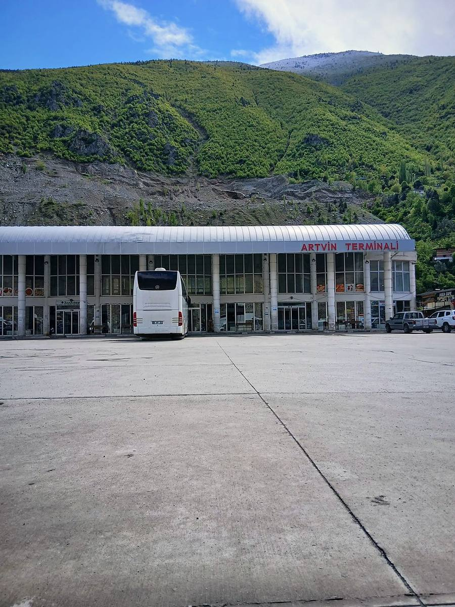
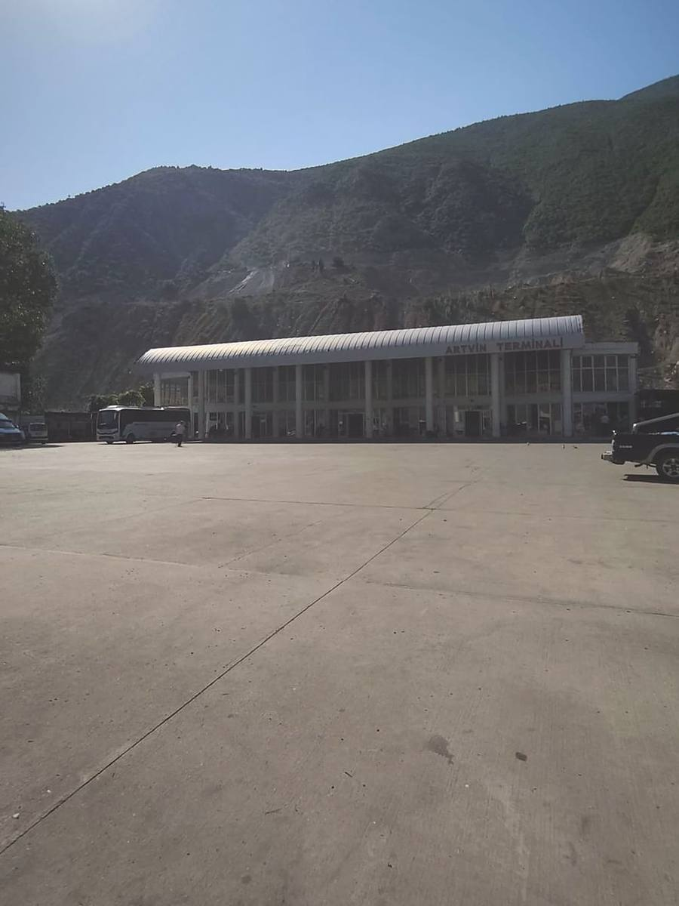
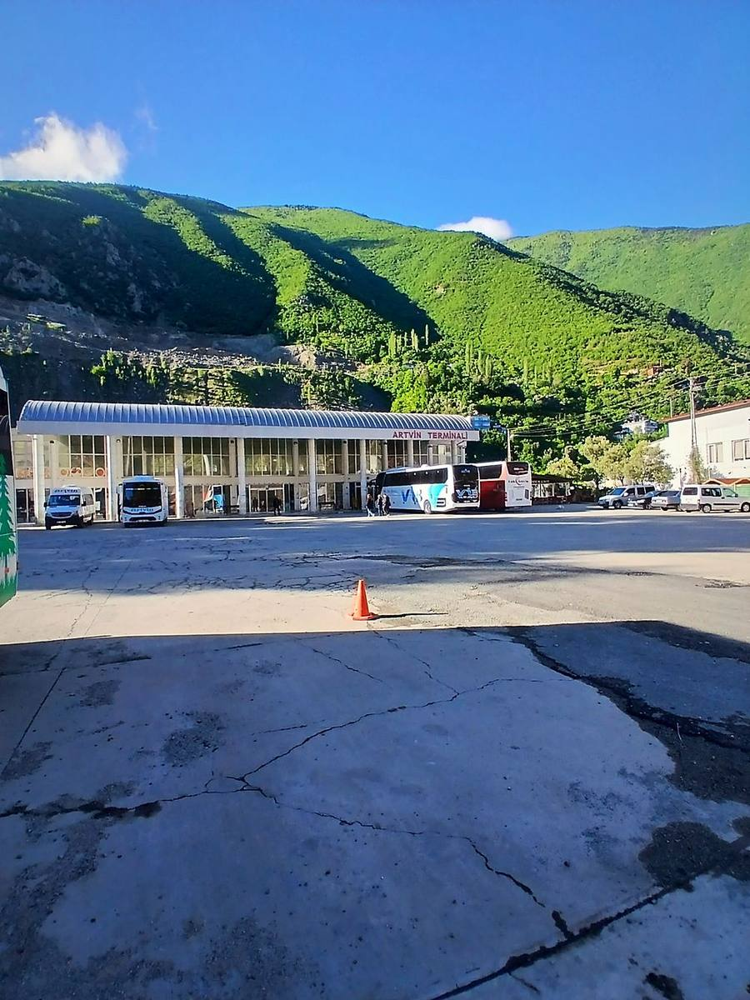

Lüks Artvin Seyahat
Uzun hatTrabzonSamsunAnkaraEskişehirİstanbulBursa
Artvin Şehirlerarası Otobüs Terminali, şehir merkezinde Erzurum Caddesi üzerindedir. İstanbul, Ankara, Trabzon, Erzurum ve Diyarbakır dahil Artvin'den ve Artvin üzerinden giden 9 firmanın hatlarını, telefonlarını ve bilet bağlantılarını aşağıda bulabilirsin.
Otogarı gitmeden görün

1/4Erzurum Caddesi üzerindeki iki katlı terminal binasında bilet yazıhaneleri, büfeler ve kafeler tek çatı altında. Çoruh Vadisi'nin yamaçlarına yaslanan bina, şehir merkezinde, Çarşı bölgesinde yer alır.

2/4Binanın önündeki geniş beton peron, otobüslerin yolcu alıp bıraktığı ana meydandır. Yaz aylarında ve Eylül'deki üniversite kayıt döneminde yoğunlaşır; kalkıştan en az 20–30 dakika önce gelmeni öneririz.

3/4Uzun yol otobüsleri, ilçe hatlarına çalışan minibüsler ve şehir içi dolmuşlar aynı meydanı paylaşır. Mavi-Beyaz dolmuşlar otogarın karşısındaki duraktan merkeze ve kampüse kalkar; 23:30'a kadar çalışır.
 4/4
4/4Sefer saatleri ve bilet için firmaların yazıhanelerini arayabilir ya da aşağıdaki firma kartlarından doğrudan iletişime geçebilirsin. Ücret ve iptal koşulları firmaya göre değişir.
Artvin'den İstanbul, Ankara ve Karadeniz kıyısındaki büyük şehirlere doğrudan kalkan firmalar.
Artvin merkezli, komşu il ve ilçelere düzenli çalışan firmalar.
Başka illerden gelip Artvin terminaline uğrayan, güney ve doğu hatlarına bağlayan firmalar.
Artvin Şehirlerarası Otobüs Terminali'nde gitmeden önce işine yarayacak özet bilgiler.
Erzurum Caddesi, Çarşı bölgesi, Merkez / Artvin. Şehir merkezinde olduğu için yürüyerek ya da dolmuşla ulaşılır.
Otogarın karşısındaki duraktan Mavi-Beyaz dolmuşlar merkeze, çarşıya ve yurt bölgelerine gider; hafta içi 3–5 dakikada bir, 23:30'a kadar. Ayrıntı için kampüs ulaşım rehberi.
Rize-Artvin Havalimanı'na gidiş için Havaş servis saatlerine bak. Taksi için taksi ücretleri sayfası hazır.
Gitmek istediğin şehre göre sefer yapan firmalar. Sefer günleri ve saatleri sezona göre değişir; kesin bilgi için firmayı ara.
Artvin Şehirlerarası Otobüs Terminali şehir merkezinde, Çarşı bölgesinde Erzurum Caddesi üzerindedir. Firmaların çoğu buradan kalkış yapar; bazı firmalar şehir içinde ek yazıhane de kullanır.
Evet. Lüks Artvin Seyahat ve Kamil Koç Artvin–İstanbul hattında sefer düzenler. Yolculuk firmaya ve güzergâha göre yaklaşık 20 saat sürer.
Artvin–Trabzon arası yaklaşık 238 km'dir ve otobüsle genellikle 4 saat 25 dakika civarı sürer. Yeşil Artvin Ekspres, Lüks Artvin Seyahat, Kamil Koç ve Tokat Yıldızı bu hatta sefer yapan firmalar arasındadır.
Evet. Yeşil Artvin Ekspres Artvin–Erzurum hattında sefer yapar. Cesur Bingöl, Yeni Bingöl ve Özlem Diyarbakır Erzurum üzerinden güneye giden hatlarda Artvin'e uğrar.
Evet. Cesur Bingöl, Yeni Bingöl ve Özlem Diyarbakır Artvin'den Diyarbakır yönüne yolcu alır. Sefer günleri ve saatleri sezona göre değişir; biletini firmadan ya da sitelerinden al.
Otogarın karşısındaki duraktan kalkan Mavi-Beyaz dolmuşlar merkeze, çarşıya ve yurt bölgelerine gider; hafta içi 3–5 dakikada bir sefer yapar ve 23:30'a kadar çalışır. Taksi de kullanabilirsin.
Biletini terminaldeki firma yazıhanelerinden, telefonla ya da firmaların internet sitelerinden alabilirsin. Kalkıştan en az 20–30 dakika önce peronda ol; yoğun dönemlerde (yaz, Eylül kayıt dönemi, bayramlar) biletini önceden ayırt.